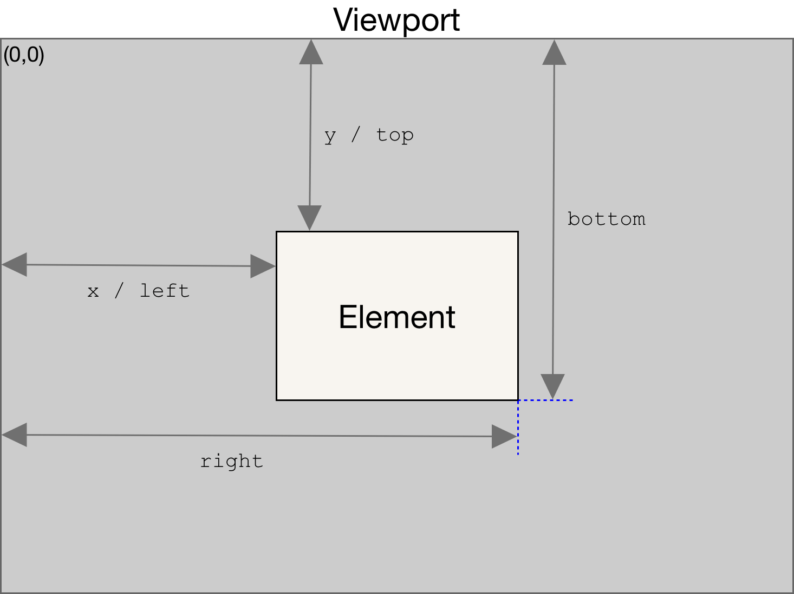

The Element.getBoundingClientRect() method returns a
{{domxref("DOMRect")}} object providing information about the size of an element and its
position relative to the viewport.
domRect = element.getBoundingClientRect();
The returned value is a {{domxref("DOMRect")}} object which is the smallest rectangle
which contains the entire element, including its padding and border-width. The
left, top, right, bottom,
x, y, width, and height properties
describe the position and size of the overall rectangle in pixels. Properties other than
width and height are relative to the top-left of the viewport.

The width and height properties of the {{domxref("DOMRect")}}
object returned by the method include the padding and
border-width, not only the content width/height. In the standard box model,
this would be equal to the width or height property of the
element + padding + border-width. But
if box-sizing: border-box is
set for the element this would be directly equal to its width or
height.
The returned value can be thought of as the union of the rectangles returned by {{domxref("Element.getClientRects", "getClientRects()")}} for the element, i.e., the CSS border-boxes associated with the element.
Empty border-boxes are completely ignored. If all the element's border-boxes are empty,
then a rectangle is returned with a width and height of zero
and where the top and left are the top-left of the border-box
for the first CSS box (in content order) for the element.
The amount of scrolling that has been done of the viewport area (or any other
scrollable element) is taken into account when computing the bounding rectangle. This
means that the rectangle's boundary edges (top, right,
bottom, left) change their values every time the scrolling
position changes (because their values are relative to the viewport and not absolute).
If you need the bounding rectangle relative to the top-left corner of the document,
just add the current scrolling position to the top and left
properties (these can be obtained using {{domxref("window.scrollX")}} and
{{domxref("window.scrollY")}}) to get a bounding rectangle which is independent from the
current scrolling position.
Scripts requiring high cross-browser compatibility can use
{{domxref("window.pageXOffset")}} and {{domxref("window.pageYOffset")}} instead of
window.scrollX and window.scrollY. Scripts without access to
these properties can use code like this:
// For scrollX (((t = document.documentElement) || (t = document.body.parentNode)) && typeof t.scrollLeft == 'number' ? t : document.body).scrollLeft // For scrollY (((t = document.documentElement) || (t = document.body.parentNode)) && typeof t.scrollTop == 'number' ? t : document.body).scrollTop
This simple example retrieves the DOMRect object representing the bounding
client rect of a simple <div> element, and prints out its properties
below it.
<div></div>
div {
width: 400px;
height: 200px;
padding: 20px;
margin: 50px auto;
background: purple;
}
let elem = document.querySelector('div');
let rect = elem.getBoundingClientRect();
for (var key in rect) {
if(typeof rect[key] !== 'function') {
let para = document.createElement('p');
para.textContent = `${ key } : ${ rect[key] }`;
document.body.appendChild(para);
}
}
{{EmbedLiveSample('Basic', '100%', 640)}}
Notice how the width/height are equal to its
width/height + padding.
Also note how the values of x/left,
y/top, right, and bottom are equal
to the absolute distance from the relevant edge of the viewport to that side of the
element, in each case.
This example demonstrates how bounding client rect is changing when document is scrolled.
<div></div>
<div id="example"></div>
<div id="controls"></div>
div#example {
width: 400px;
height: 200px;
padding: 20px;
margin: 50px auto;
background: purple;
}
body { padding-bottom: 1000px; }
p { margin: 0; }
function update() {
const container = document.getElementById("controls");
const elem = document.querySelector('div');
const rect = elem.getBoundingClientRect();
container.innerHTML = '';
for (let key in rect) {
if(typeof rect[key] !== 'function') {
let para = document.createElement('p');
para.textContent = `${ key } : ${ rect[key] }`;
container.appendChild(para);
}
}
}
document.addEventListener('scroll', update);
update();
{{EmbedLiveSample('Scrolling', '100%', 640)}}
The returned DOMRect object can be modified in modern browsers. This was
not true with older versions which effectively returned DOMRectReadOnly.
With IE and Edge, not being able to add missing properties to their returned ClientRect,
object prevents backfilling x and y.
Due to compatibility problems (see below), it is safest to rely on only properties
left, top, right, and bottom.
Properties in the returned DOMRect object are not own properties. While
the in operator and for...in will find returned properties,
other APIs such as Object.keys() will fail. Moreover, and unexpectedly, the
ES2015 and newer features such as Object.assign() and object rest/spread
will fail to copy returned properties.
rect = elt.getBoundingClientRect()
// The result in emptyObj is {}
emptyObj = Object.assign({}, rect)
emptyObj = { ...rect }
{width, ...emptyObj} = rect
DOMRect properties top, left,
right, and bottom are computed using the values of the
object's other properties.
{{Compat}}
getBoundingClientRectClientRect, an earlier version of DOMRect